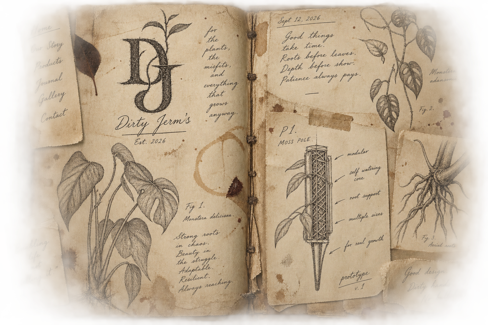

Field note · 01
The House
Dirty Jerm's makes objects that help living things do what they were already trying to do.
Climb. Root. Unfurl. Bloom.
We don't manufacture the moment. We make room for it.

Field note · 01
Dirty Jerm's makes objects that help living things do what they were already trying to do.
Climb. Root. Unfurl. Bloom.
We don't manufacture the moment. We make room for it.
Prototype · P1
Ugly first. Useful first. Pretty after it earns it.
“Enabling life, not selling it.”
That is the whole point. The object is not the experience. The object exists to make the experience possible.
Sept. 13, 2026
There are prototypes to make, products to test, mistakes to keep, and ideas that will probably get dirt under their nails before they ever get a price tag.
This is the working record. The messy parts stay.
— J.
Foundry study · after hours
Material / texture note
Prototype no. 01
For collaborations, questions, or strange little ideas worth growing.
hello@dirtyjerms.com